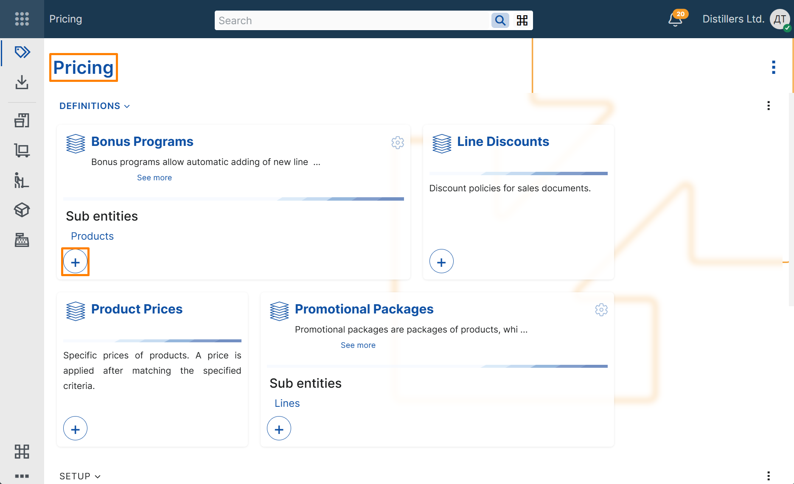
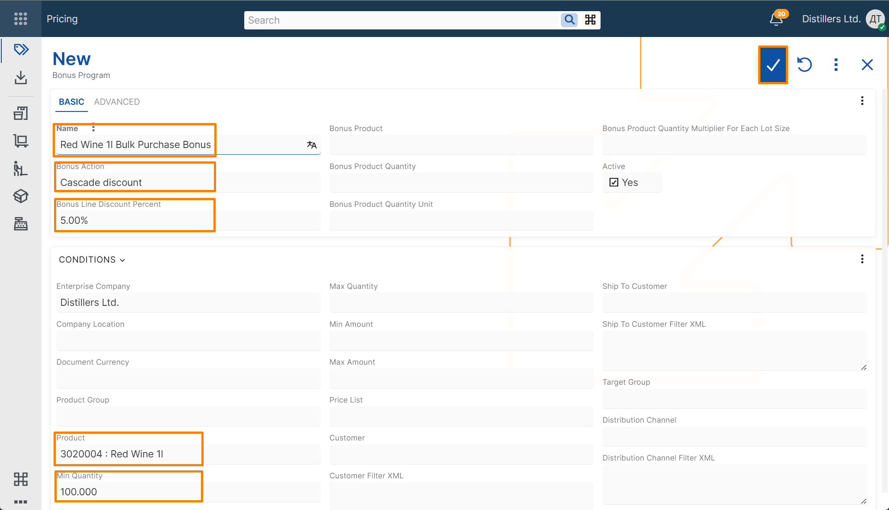
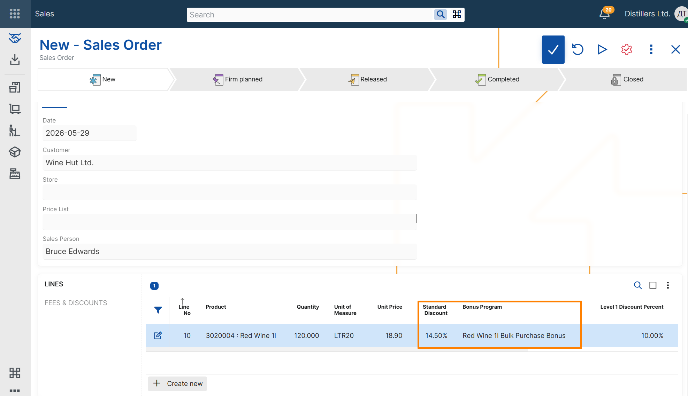

Create a basic cascade discount bonus program
This example shows how to create a cascade discount bonus program and verify that it is applied in a sales order.
Note
Cascade discount bonuses are applied after the standard discount percent on the sales order line. To test this example, use a product that already has an active line discount.
For an example of how to create a line discount, see Create a basic line discount.
Steps
- Open the Pricing module.
- In the Bonus Programs tile, select + button.

- In the new bonus program record, enter the following:
- Name – text that identifies the bonus program
- Bonus Action – select Cascade discount to create a bonus program that adds an additional discount after the standard discount percent
- Bonus Line Discount Percent - the cascade discount percentage to apply
- Product – the product that activates the bonus
- Min Quantity – the minimum ordered quantity required for the bonus to apply
- Save the record.
Note
Enterprise Company is filled in automatically with the current enterprise company.

Verify the result
- Create a new Sales Order.
- Select a customer.
- Add a line for the same product with a quantity that fulfills the bonus program condition.
- Review the values in the Bonus Program and Line Standard Discount Percent fields.
The Bonus Program field should contain a reference to the bonus program that was just created.
The Line Standard Discount Percent field should contain the final discount percent, calculated cumulatively from the existing line discount and the cascade discount bonus.
